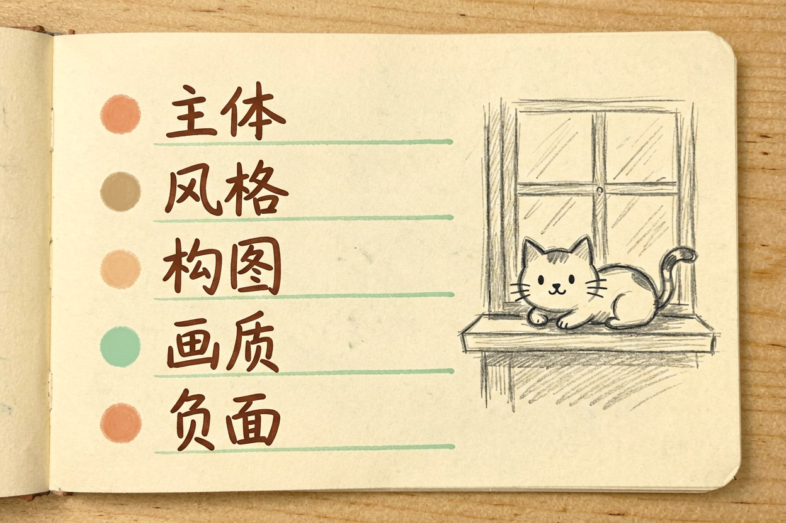
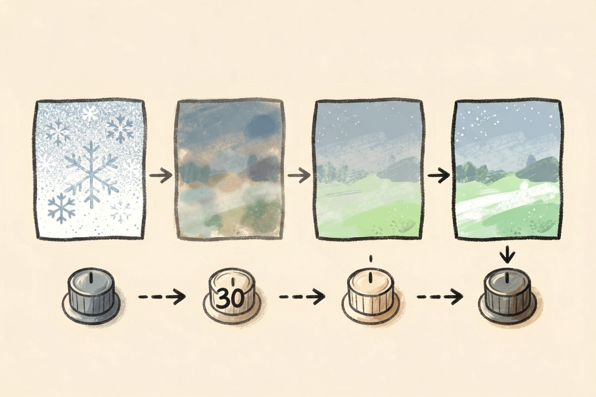
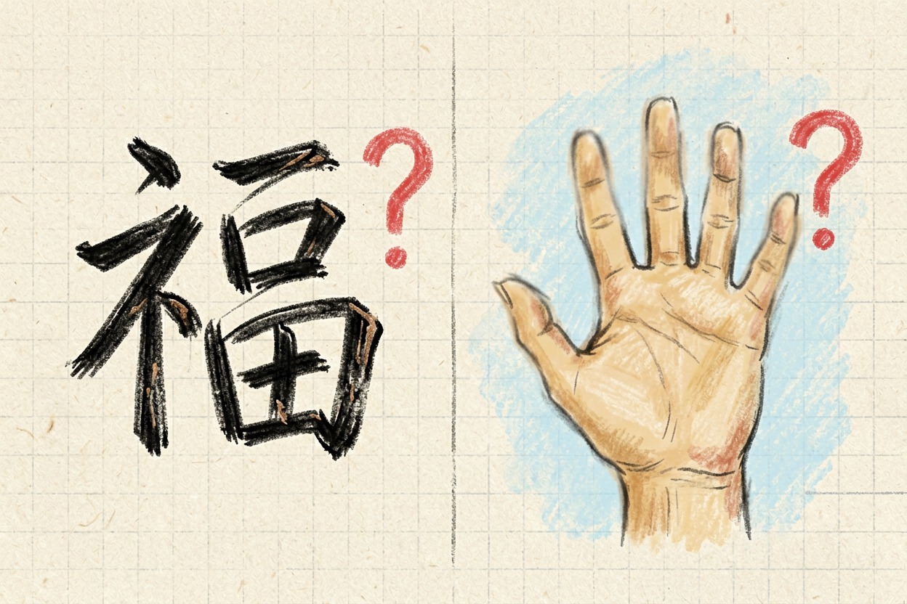
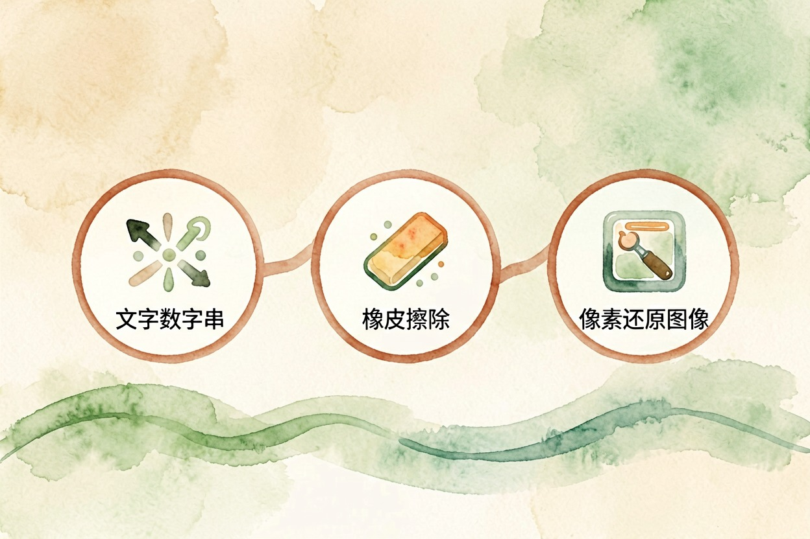

AI 画图的原理是什么？大白话讲清整个过程 — Learntide
机器不是照着草稿描线，而是盯着一屏雪花，按你给的词把画面擦出来。搞懂这条链路，出图就不靠碰运气。
AI 画图原理：从一团噪点讲起

AI 画图原理说穿了就一句话：从一屏随机噪点出发，按你给的文字一步步擦掉噪声，最后擦出画面。它不在空白画布上描线，也不去图库里翻旧图拼贴。
头一次听会觉得反直觉。换个说法就好懂。你盯着墙上的霉斑看久了，会看出人脸，看出动物。模型干的事差不多，只是它每一步都有文字在旁边指挥方向。
所以文生图原理讲解绕来绕去，核心就三件事：把话变成数字，把噪点擦干净，把结果还原成像素。
文字是怎么变成指挥棒的

你敲进去的提示词，先被切成一个个小片段，再换成一串数字。这串数字带着语义，意思接近的词，数字也彼此靠得近。
这一步很要紧。模型读不懂「傍晚的海边」这五个字，它只认那串数字。提示词含糊，数字跟着含糊，出图自然飘。
提示词结构（越靠前权重越高）
主体：一只橘猫，趴在木窗台上
风格：胶片颗粒，柔和逆光
构图：中景，浅景深，主体偏左
画质：毛发细节清晰，色彩自然
负面词：多余手指，五官变形，水印文字顺序有讲究。多数模型对靠前的词更敏感。把最不能丢的东西写在最前面，比堆一长串形容词管用。同一句话换个语序，出图能差不少。
去噪那几十步在干什么

模型拿到的是一团彻底的雪花。它不会一口气把图变出来，而是分成几十步，每步只判断一件事：哪些像素属于噪声，该减掉多少。
减完一轮，画面清晰一点点。再对着文字那串数字比一比，方向偏了就往回拉。来回几十轮，形状、颜色、光影就从雪花里浮出来了。
采样步数调的就是这个回合数。步数太少，图没擦干净，细节发糊。步数堆太高，收益越来越小，时间倒是成倍涨。
重绘幅度也是同一个道理。幅度小，等于从半干净的原图接着擦；拉满就退回全噪点，跟重画没区别。
为什么中文和手指最容易翻车
ai绘画的原理是什么，答案里就藏着这两个老毛病的根源。
模型是按图形规律还原画面的。汉字在它眼里是一堆笔画拼出来的图案，没有固定结构可言。少一横多一撇，从图形上看差别不大，认字上就是错字。海报里的中文常常缺笔、粘连，甚至造出根本不存在的字。
手的问题类似。训练素材里的手，姿态、角度、遮挡千变万化，模型很难总结出「一只手五根指头」这条硬规则。它学到的更接近「这个位置大概有几根条状物」。
别把提示词当成咒语
网上流传的万能咒语，多半只在某个模型的某个版本上灵。换一家工具照抄，效果经常对不上。
真正稳的做法是按结构写：先说清主体和场景，再补风格和画质，最后用负面词挡掉你最怕出现的东西。一次只改一处，看它往哪边动。
中文和手部目前都没有彻底解法。文字最好图归图、字归字，留到排版环节再加；手部靠局部重绘慢慢修。别指望换个提示词就一次到位。真想少走弯路，先把 ai画图原理这条链路记牢，比背一百句咒语管用。

本文信息核对于 2026-08-08。AI 产品的价格、免费额度与功能变动频繁，实际以各工具官网当前说明为准。